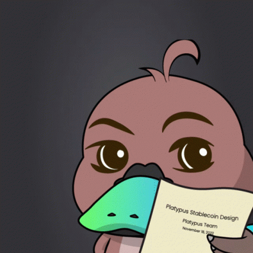
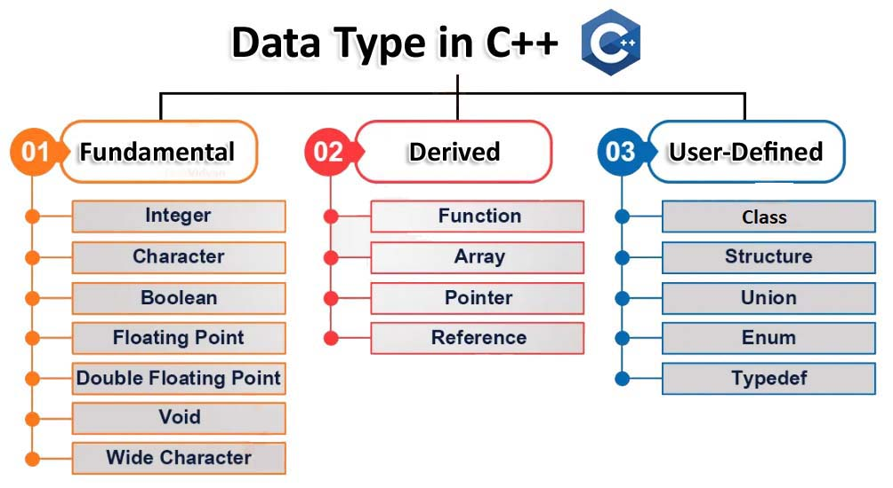
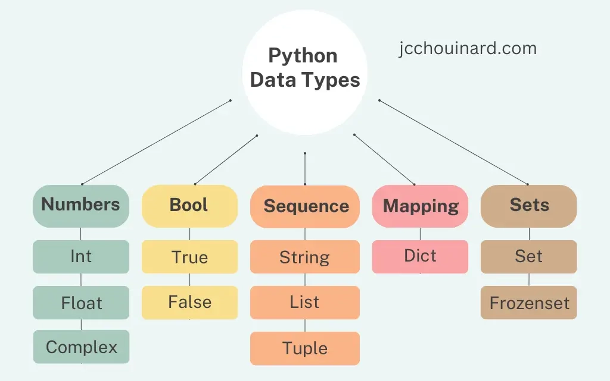
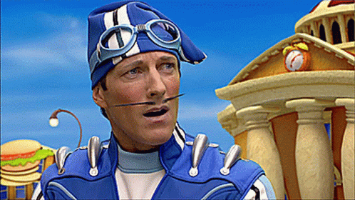
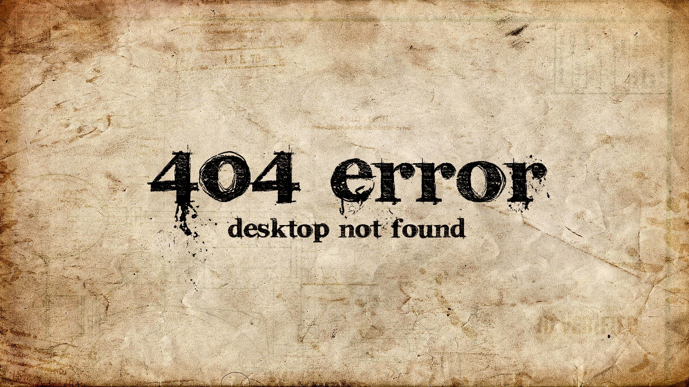
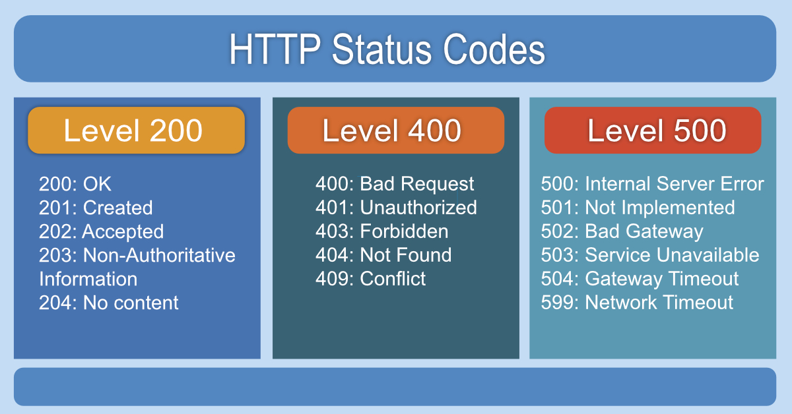
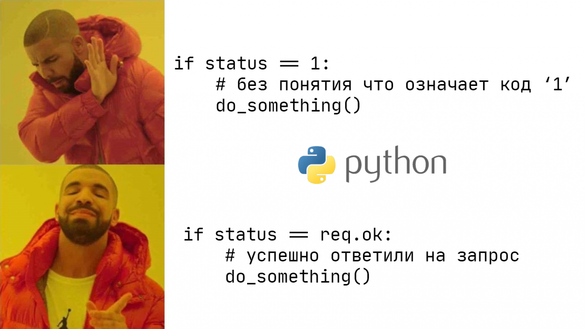
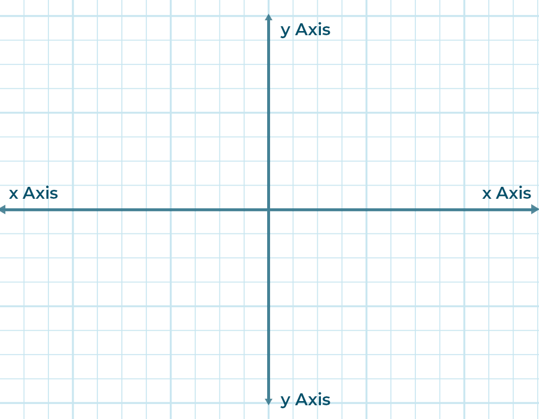
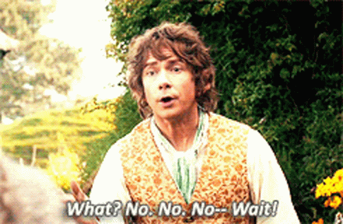

Fullscreen mode
Just press »F« on your keyboard to show your presentation in fullscreen mode. Press the »ESC« key to exit fullscreen mode.
Overview mode
Press "Esc" or "o" keys to toggle the overview mode on and off. While you're in this mode, you can still navigate between slides, as if you were at 1,000 feet above your presentation.
Python and The Basics of Programming.
Classes, Structure, Enum
Lesson 6
Author: Egoshkin Danila Igorevich
Object-oriented programming - OOP
Plan for today 🔽Type
Enum
Struct
Class
Class vs Object
Ducks o_0
.gif)
https://uk.wikipedia.org/wiki/%D0%9A%D0%B0%D1%87%D0%BA%D0%B8
Type
Basic Data Types
Python Data Types
That is all Folks!

And why do we need other types?

We already have everything!?... Have we???
Code for one error
int checkData(char* data, int dataSize){
bool errorInData = false;
for(int i = 0; i < dataSize; i++){
// some data checking...
if(errorInData){
return 1;
}
}
return 0;
}
Code for states
Code for states
string coolFun(dataErrorCode) {
switch (dataErrorCode) {
case -1001:
return "Unspecified Error";
case -1000:
return "File Type Not Supported";
case -27:
return "File Version Not Supported";
case -23:
return "Error opening output file";
case 7:
return "Magic number 🎇";
case 42:
return "The answer to life, the universe, and everything";
case 13:
return "This is my favorite number, and what did you think of?";
|
return null;
}
}
This example is not real, it is made up
This example is not real, it is made up
Okay, take that
Magic numbers in code
case 7:
return "Magic number 🎇";
Enum in Programming
Enum in Programming
int RED = 1;
int YELLOW = 2;
int GREEN = 3;
Enum in Programming
enum TrafficLight
{
RED = 1,
YELLOW = 2,
GREEN = 3
};
Enum in Python
from enum import Enum
# class syntax
class TrafficLight1(Enum):
RED = 1
YELLOW = 2
GREEN = 3
print(TrafficLight1.RED)
# functional syntax
TrafficLight2 = Enum('TrafficLight by functional syntax', ['RED', 'YELLOW', 'GREEN'])
print(TrafficLight2.RED)
Struct
Struct for Point 2D or 3D
Discribe the point??? What it should have?
struct Point2D {
int x;
int y;
/*
ID
Color
Space
Coordinate Paper ID
*/
/**
Dark magic for functions *
*/
}
But there is no such thing as 'Structure' in Python.
Struct in Python by Map
person = {
"name": "John",
"age": 30,
"city": "New York"
}
print(person["name"])
print(person["age"])
print(person["city"])
Struct in Python by Class
# Using a class to represent a "struct"
class Person:
def __init__(self, name, age, city):
self.name = name
self.age = age
self.city = city
# Create an instance
person = Person(name="John", age=30, city="New York")
print(person.name)
print(person.age)
print(person.city)
Class
Class in programming
A Class - is a user-defined type declared with keyword class that has data and functions (also called member variables and member functions) Can have three access specifiers: private, protected or public.
class className {
// some data - member variables - поля
// some functions - member functions - методи
};
Class in programming ex. Point2D
If your class without functions, it is a Structure!!!
class Point2D {
// Data (but this data is private)
int x;
int y;
};
Class in programming ex. Point2D (struct vs class)
struct Point2D {
// Data // In struct data is always public
int x;
int y;
};
class Point2D {
// Data // In class data is always private
private:
int x;
int y;
};
Struct == Class
struct Person {
string name;
int age;
};
class Person {
public:
string name;
int age;
};
Class in programming ex. Point2D (main)
STILL without functions, it is a Structure!!!
#include <iostream>
class Point2D {
// Data
public: // access specifier
int x;
int y;
};
int main() {
Point2D p1;
p1.x = 10;
p1.y = 5;
std::cout << "Point2D: " << p1.x << ", " << p1.y << std::endl;
}
Class in programming ex. Point2D (main)
It is with function, it is a CLASS!!!
#include <iostream>
class Point2D {
// Data
public: // access specifier
int x;
int y;
// Functions
void print() {
std::cout << "Point2D: " << this->x << ", " << this->y << std::endl;
}
friend std::ostream& operator<< (std::ostream& stream, const Point2D& point2D) {
stream << "Point2D: " << point2D.x << ", " << point2D.y;
return stream;
}
};
int main() {
Point2D p1;
p1.x = 10;
p1.y = 5;
p1.print();
std::cout << p1 << std::endl;
}
Class in programming
Pro version of Point2D
#include <iostream>
class Point2D {
private:
int _x;
int _y;
public:
void setX(int x) {
_x = x;
}
void setY(int y) {
_y = y;
}
int getX() {
return _x;
}
int getY() {
return _y;
}
void print() {
std::cout << "Point2D: " << this->_x << ", " << this->_y << std::endl;
}
friend std::ostream& operator<< (std::ostream& stream, const Point2D& point2D) {
stream << "Point2D: " << point2D._x << ", " << point2D._y;
return stream;
}
};
Duck typing
.gif)
https://en.wikipedia.org/wiki/Duck_typing
Duck typing
"If it walks like a duck and it quacks like a duck, then it must be a DUCK".gif)
Does it make sense?
Duck typing Class in Python
class Duck:
def swim(self):
print("Duck Swimming")
def quacks(self):
print("Duck Quacking")
class Whale:
def swim(self):
print("Whale Swimming")
duck = Duck()
whale = Whale()
for animal in [duck, whale]:
animal.swim()
animal.quacks()
Links: